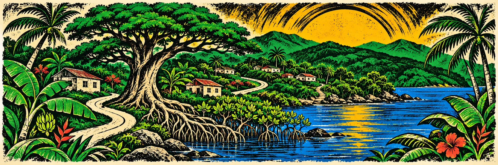
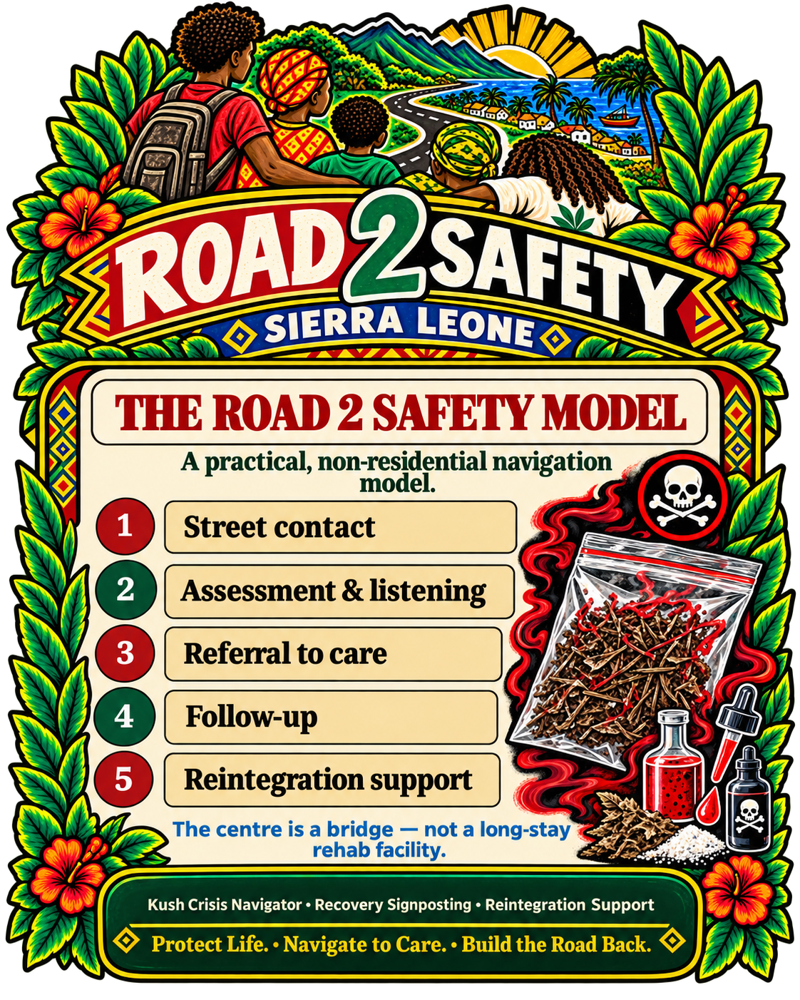

Public or independently supported evidence suitable for careful external use.
YOUR JOURNEY. YOUR NEXT STEP.
WHAT DO YOU
NEED TODAY?
Care. Recovery. Community. Opportunity.

No personal details needed to explore.
CHOOSE YOUR PATH.
START HERE ↓
01
I NEED HELPSafety, support and the next step.
↗
02I’M IN RECOVERYFollow-up, skills and a road forward.
↗
03I SUPPORT SOMEONEGuidance for family and community.
↗
04I CAN CONTRIBUTEShare expertise. Build capacity.
↗
FOLLOW THE EVIDENCE.Explore the project and its sources.
THE ROAD BACK
CRISIS→CARE→RECOVERY→SKILLS→REINTEGRATION

Explore, question and contribute. Road 2 Safety International is in formation as a UK Community Interest Company and is not yet incorporated.
Find out how to contribute ↗PROGRAMME FAMILY
ONE ROAD. CONNECTED ROUTES.
Each lane has a different job and different safeguards.
01Road 2 Safety CoreCare navigation · recovery · reintegration
Kush Crisis Navigator, referral follow-through, family/community support and longer-term recovery pathways.
02Plastic 2 PurposeCircular economy · skills · employment
Waste → Skills → Production → Employment → Recovery → Reintegration. A proposed circular-economy programme intended to create more stable routes into skills and livelihood. Any relationship with Nzambi Matee / Gjenge Makers remains a proposed partnership to approach, not an existing partnership.
03Science & Recovery R&DToxicology · cannabinoids · Iboga research
Research questions are kept separate from treatment claims. Any human research requires qualified institutions, ethics approval, clinical governance and relevant legal/regulatory permissions.
04Top-Down Systems WorkSupply · money · governance · accountability
Map the crisis as one connected system: public-health harm at street level, organised supply above it, financial profit behind it and institutional accountability around it.
THE PRINCIPLE
Do not build the response around punishing the most vulnerable point in the chain.
View the full Road 2 Safety model artwork

EVIDENCE LIBRARY
FOLLOW THE EVIDENCE.
Know the source. Understand the limits. Ask the next question.
Identifiable Sierra Leonean or institutional material that can be cited with its source and limits.
First-hand professional information that may be important but still requires corroboration.
A scientific or policy question being tested rather than an established answer.
Material requiring controlled handling rather than automatic public publication.
Project documents
DOC
Foundational Framework v2Mission, operating model and governance boundaries
↓
DOCPlastic 2 Purpose Founding FrameworkEconomic opportunity and reintegration pathway
↓
DOCOne-page Organisational ProfileQuick institutional overview
↓
PPTInstitutional Pitch DeckGovernment, partner and funder presentation
↓
ABOUT ROAD 2 SAFETY
ROOTED IN COMMUNITY.
Road 2 Safety International is being formed as the UK international coordination, fundraising, partnership and project-incubation body alongside a locally governed Sierra Leone operational structure.

People are people before they are “users”, “addicts” or statistics. Care and informed choice come before ideology.
Verified evidence, documented sources, advisory information and unresolved claims should not be presented as though they carry the same certainty.
Frontline recovery money should not silently subsidise specialist research or unrelated advocacy.
No experimental medicine is promoted as a cure before appropriate evidence, approvals and clinical safeguards exist.
GENERAL & PARTNERSHIP ENQUIRIES
Road2SafetyCIC@gmail.comPlease do not send medical records or confidential case histories.Prototype privacy position
← View public holding website
This prototype saves display preferences on this device. No accounts, analytics, tracking or beneficiary case database. Your health or addiction history is not collected.
Photography & design credits
Campaign artwork is an AI-assisted collage. Freetown market photo reference: Erik Cleves Kristensen, 2014, CC BY 2.0. No claim about the circumstances of the people pictured. Full credits ↗
.jpg){kind=link}
The woven texture and coastal nature scene are contemporary Sierra Leone-inspired campaign artwork. They are distinct from documentary photographs.